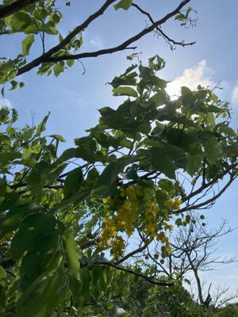

うるがいの話 ある日
最新: 目について【うるがいの話 ある日】とは 一日だけのプログです
『うるがいの話』の最新一日だけのプログで、通信料が少なく経済的だ。カニの画像をクリックすると全ての日付が載る『うるがいの話』サイトを表示します
|
|
【うるがいの話】 うるがい(ｳﾙｶﾞｲ urugai)とは、『もずくがに』の名前でとても大きくなります。 |
|---|---|
|
|
【カミマヤーの話】 猫のことを方言でマヤーといいます。カミマヤー（kamimayaa）とは、神の猫のことです。 |
|
【たながぁの音楽】 たながぁ（ﾀﾅｶﾞｰ tanagaa）とは手長えびのことで、何種類かあり大きいのは車 エビぐらいになります。 |

|
【ぶながぁの話】 ぶながぁ(ﾌﾞﾅｶﾞｰ bunagaa)とは、赤い髪の毛、赤い身体、そして身長は１ｍ２０ｃｍ ぐらい、川の蟹を食べているの目撃された。場所は沖縄県国頭郡大宜味村のと ある村僕の隣近所に住んでいる爺さんから、聞いた話です。 |
|
|
【ギーマの話】 ギーマ(giima)とは、山原の里山に咲くスズランに似た、 花を付けます。実は食べられます、 気が付くと口の周りが紫になっています。 |
2024年05月16日 (木）目について
15:19
視力が変わる。ひと月前から、パソコン向けに利用していた近く用のメガネ
が合わなくて利用するのを止める。そして、パソコンから少し距離がある時
に使っていたメガネひとつで済ませている。メガネ屋さんが、そのうち近く
のメガネは要らなくなるよと言われたことを思い出す。いいのか、悪いのか
？、メガネが要らないのならいいのだろう。ちなみに合わなくなったメガネ
が４つほどある。レンズを変えれば、利用できるものだが。

朝起きると目がヒリヒリする、そして目ヤニも出る。いずれもドライアイが
原因らしい、眼科からドライアイの目薬をもらって点眼しているが、涙が頻
繁にでてくる。きのうから、抗菌点眼薬を追加し利用すた。効果があるよう
だ、収まる。菌があるのか・・・。パソコン、読書など目を使いすぎるのが
そもそもの原因なのだが。予防として４４分おきに休憩を兼ねながら、外を
見る事にしている。いい天気だ！、すこし肌寒い。
１５時１４分 ビットコインの総資産 ￥２９、４０８（↑１、２９８）